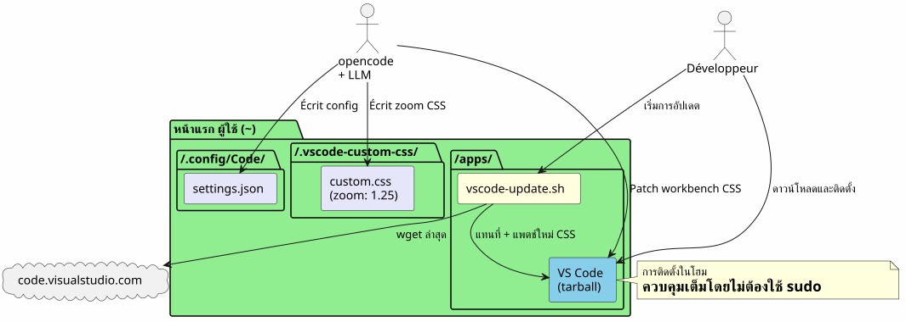
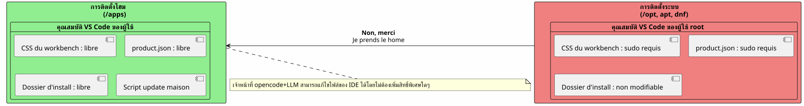
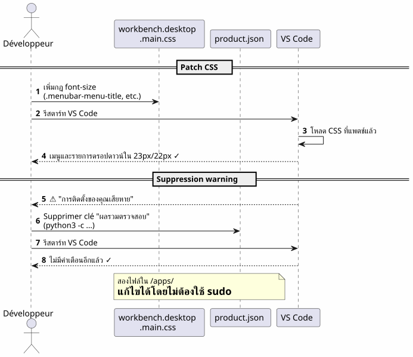
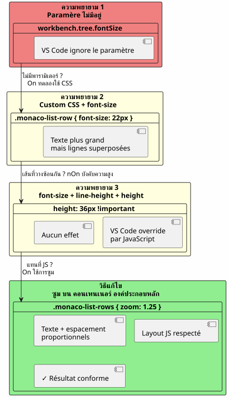
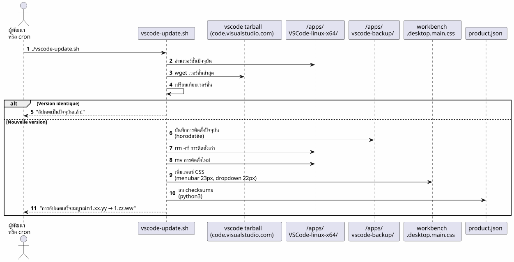
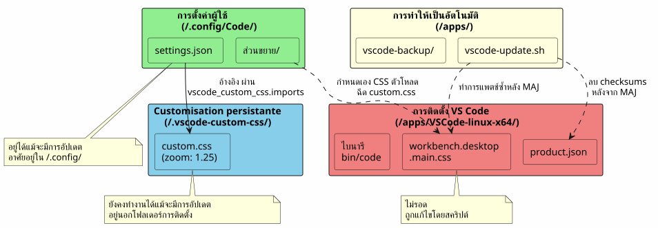
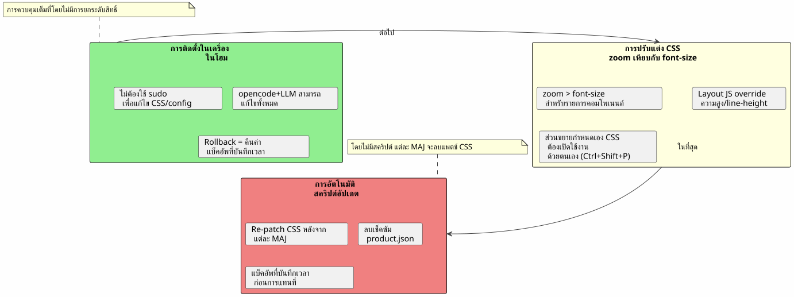

VS Code ในที่บ้าน : การติดตั้งแบบเฉพาะที่และการปรับแต่งแบบอักษรโดยไม่ใช้ sudo
เผยแพร่เมื่อ 17 April 2026
ทำไมต้องติดตั้ง VS Code ใน`/opt`หรือ ผ่าน`apt`เมื่อเราสามารถวางมันที่บ้านได้และเปลี่ยน IDE ของตนให้กลายเป็นสนามเด็กเล่นโดยไม่ต้องพิมพ์อะไรเลย`sudo`? นี่คือเรื่องราวของการติดตั้งในท้องถิ่นที่ตามมาด้วยการต่อสู้อย่างหนักเพื่อขยายขนาดฟอนต์ของเมนูและตัวสำรวจไฟล์.
- ทอก
-
(No visible characters; output remains empty)
ภาพรวมของเส้นทาง

เหตุผล: VS Code ในบ้าน
ปัญหาเกี่ยวกับการติดตั้งระบบ
VS Code ที่ติดตั้งผ่าน`apt`, dnf`หรือใน/opt`การบล็อกไฟล์ของแอปพลิเคชันไว้หลังจากสิทธิ์รูท. การแก้ไขใด ๆ ของ CSS เนทีฟ, ของ`product.json`หรือ ของโฟลเดอร์การติดตั้งต้องการ`sudo`.
อย่างไรก็ตาม, เมื่อมีการใช้opencode(tool CLI เพื่อควบคุม LLM บนโค้ดของผู้ใช้), เอเจนท์ต้องการความสามารถที่จะ :
-
เขียนลงในไฟล์การกำหนดค่า`~/.config/Code/User/settings.json`) — นี่อยู่ที่บ้านแล้ว
-
แก้ไขทรัพยากรของ IDE (CSS ของ workbench,
product.json) สำหรับการปรับแต่งขั้นสูง — มัน, ถูกบล็อกโดยไม่มี sudo
คำตอบ : การติดตั้งในเครื่อง
เราดาวน์โหลดไฟล์อาร์ไคฟ์ tarball ทางการและแตกไฟล์ออกโดยตรงใน`~/apps/` :
mkdir -p ~/apps
cd ~/apps
wget "https://code.visualstudio.com/sha/download?build=stable&os=linux-x64" -O vscode.tar.gz
tar -xzf vscode.tar.gz
rm vscode.tar.gzไบนารีตั้งอยู่ใน`~/apps/VSCode-linux-x64/bin/code`. ไม่มี`sudo`จำเป็นสำหรับการอ่าน, การแก้ไข หรือการเปลี่ยนแปลงไฟล์ใด ๆ ภายใต้`~/apps/VSCode-linux-x64/`.
ประโยชน์ที่เป็นรูปธรรม

| ข้อได้เปรียบ | รายละเอียด |
|---|---|
ไม่มี sudo |
ไฟล์ทั้งหมดของ IDE เป็นของผู้ใช้ |
การแก้ไข CSS โดยตรง |
สามารถแพทช์ได้`workbench.desktop.main.css`โดยไม่มีการเพิ่มสิทธิ์ |
สคริปต์อัปเดตบ้าน |
สคริปต์เชลล์แบบง่ายจะดาวน์โหลด แทนที่และแก้ไขโดยอัตโนมัติ |
การแยกออก |
การติดตั้งระบบไม่ได้รับการปนเปื้อน ; rollback = ลบโฟลเดอร์ |
ปรับแต่งฟอนต์ของเมนูหลัก
การสังเกต
แบบอักษรเริ่มต้นของเมนูหลัก (File, Edit, View…) และดร็อปดาวน์มีขนาดเล็กเกินไป VS Code ไม่ได้ให้การตั้งค่าใดๆ ในการเปลี่ยนแปลงมัน
เทคนิค : แพตช์ CSS โดยตรง
เพิ่ม CSS ที่ส่วนท้ายของไฟล์.workbench.desktop.main.css:

CSS_FILE="$HOME/apps/VSCode-linux-x64/resources/app/out/vs/workbench/workbench.desktop.main.css"
cat >> "$CSS_FILE" << 'EOF'
.menubar-menu-title{font-size:23px!important}
.menubar>.menubar-menu-button{font-size:23px!important}
.monaco-menu-option{font-size:22px!important;line-height:34px!important}
.monaco-menu .action-label:not(.codicon){font-size:22px!important}
.menubar-menu-items-holder .monaco-menu .action-item .action-label{font-size:22px!important}
EOFลบการแจ้งเตือนความสมบูรณ์
VS Code ตรวจพบการเปลี่ยนแปลงของไฟล์และแสดงแบนเนอร์ว่า 'Your installation is corrupt' เพื่อหลีกเลี่ยงให้ลบเช็คซัมของ`product.json`:
import json
product_json = "$HOME/apps/VSCode-linux-x64/resources/app/product.json"
with open(product_json, 'r') as f:
data = json.load(f)
data.pop('checksums', None)
with open(product_json, 'w') as f:
json.dump(data, f, indent=2)หลังจากรีสตาร์ทไม่มีคำเตือนและเมนูสามารถอ่านได้อย่างชัดเจน
ปรับแต่งฟอนต์ของบาน Explorer — การต่อสู้
ความพยายามที่ 1 : พารามิเตอร์ที่ไม่มีอยู่
เราทดลองใช้พารามิเตอร์แบบเนทีฟก่อน`workbench.tree.fontSize`ใน`settings.json`(No content)
{
"workbench.tree.fontSize": 20
}ผลลัพธ์ :ไม่มีผล. ไม่มีการตั้งค่านี้ใน VS Code. ซึ่งเป็นหลักฐานว่าการตั้งค่าที่ไม่ได้รับรู้จะถูกเพิกเฉยอย่างเงียบๆ
ความพยายามที่ 2 : ส่วนขยาย Custom CSS and JS Loader
ติดตั้งส่วนขยาย`be5invis.vscode-custom-css`:
~/apps/VSCode-linux-x64/bin/code --install-extension be5invis.vscode-custom-cssเราสร้างไฟล์ CSS ใน`~/.vscode-custom-css/custom.css`ด้วยเซเลคเตอร์ที่กำหนดเป้าหมายไปยังองค์ประกอบของ Explorer :
.monaco-tree-rows .monaco-tree-row,
.sidebar .monaco-list-row,
.explorer-viewlet .monaco-list-row,
.monaco-list-row .monaco-icon-label {
font-size: 22px !important;
line-height: 36px !important;
}และเราอ้างอิงไฟล์นี้ในการตั้งค่า :
{
"vscode_custom_css.imports": [
"file:///home/user/.vscode-custom-css/custom.css"
]
}ผลลัพธ์ :การเปลี่ยนแปลงไม่ได้ใช้บังคับ.
กับดัก : ต้องเปิดใช้งานส่วนขยายทุกครั้ง
เอกสารของส่วนขยายนั้นไม่ได้อธิบายประเด็นสำคัญนี้อย่างชัดเจน : หลังจากการแก้ไขทุกครั้งของ CSS แบบกำหนดเอง คุณต้องโดยเด็ดขาดเรียกใช้คำสั่งจากพาเลต:
-
Ctrl+Shift+P→ พิมพ์เปิดใช้งาน CSS และ JavaScript ที่กำหนดเอง -
VS Code ต้องการทำการรีสตาร์ท → ยอมรับ
หากไม่มีขั้นตอนนี้ CSS ไม่เคยถูกฉีดลงใน IDE
ความพยายามครั้งที่ 3 : เส้นซ้อนทับกัน
แม้จะมี`font-size: 22px` et line-height: 36px, ตัวอักษรที่มีก้าน (g, p, f, b) ล้นออกมาบนบรรทัดข้างเคียง. พยายามที่จะเพิ่ม`height` et min-height :
.monaco-list-row {
height: 36px !important;
min-height: 36px !important;
}ผลลัพธ์ :ไม่มีการเปลี่ยนแปลง. VS Code คำนวณความสูงของบรรทัดใน JavaScript และแทนที่ค่า CSS
วิธีแก้ : zoom บนคอนเทนเนอร์หลัก

แทนที่จะต่อสู้กับเลย์เอาต์ของ JavaScript, เราใช้คุณสมบัติ`zoom`บนคอนเทนเนอร์ของบรรทัด
.explorer-viewlet .monaco-list-rows,
.sidebar .monaco-list-rows {
zoom: 1.25;
}`zoom`ขยายการแสดงผลของคอนเทนเนอร์อย่างสม่ำเสมอ — ทั้งข้อความและระยะห่าง — โดยไม่ทำลายเลย์เอาต์ที่คำนวณโดย JavaScript engine ของ VS Code. อัตราส่วน 1.25 เทียบได้ประมาณกับการเปลี่ยนจาก 13px เป็น 16px.
ผลลัพธ์ :ชื่อไฟล์สามารถอ่านได้แล้ว, บรรทัดมีช่องว่างที่เหมาะสม.
สรุปของ selector และสิ่งที่ทำงานได้
| วิธีการ | CSS | ผลลัพธ์ |
|---|---|---|
|
|
ข้อความที่ใหญ่ขึ้น แต่บรรทัดซ้อนทับกัน |
|
|
ไม่มีผลลัพธ์ (การแทนที่ JS) |
|
|
สำเร็จ — ข้อความ + ระยะห่างที่สัมพันธ์ |
สคริปต์อัปเดตอัตโนมัติ

ปัญหา
เมื่อ VS Code อัปเดต มันจะแทนที่โฟลเดอร์การติดตั้งและลบทุกแพตช์ CSS. ต้องทำการรีแอปพลายการแก้ไขด้วยตนเองทุกครั้ง
สคริปต์ `vscode-update.sh
สร้าง`~/apps/vscode-update.sh`:
#!/bin/bash
set -e
VSCODE_DIR="$HOME/apps/VSCode-linux-x64"
BACKUP_DIR="$HOME/apps/vscode-backup"
TEMP_DIR="/tmp/vscode-update"
MENUBAR_FONT_SIZE="23px"
DROPDOWN_FONT_SIZE="22px"
echo "=== VS Code Local Updater ==="
CURRENT_VERSION=$("$VSCODE_DIR/bin/code" --version 2>/dev/null | head -1)
echo "Current version: $CURRENT_VERSION"
echo "Downloading latest VS Code..."
mkdir -p "$TEMP_DIR"
wget -q "https://code.visualstudio.com/sha/download?build=stable&os=linux-x64" \
-O "$TEMP_DIR/vscode.tar.gz"
echo "Extracting..."
mkdir -p "$TEMP_DIR/extracted"
tar -xzf "$TEMP_DIR/vscode.tar.gz" -C "$TEMP_DIR/extracted"
NEW_VERSION=$("$TEMP_DIR/extracted/VSCode-linux-x64/bin/code" \
--version 2>/dev/null | head -1)
echo "New version: $NEW_VERSION"
if [ "$CURRENT_VERSION" = "$NEW_VERSION" ]; then
echo "Already up to date!"
rm -rf "$TEMP_DIR"
exit 0
fi
echo "Backing up current installation..."
mkdir -p "$BACKUP_DIR"
cp -r "$VSCODE_DIR" "$BACKUP_DIR/VSCode-linux-x64-$(date +%Y%m%d-%H%M%S)"
echo "Updating..."
rm -rf "$VSCODE_DIR"
mv "$TEMP_DIR/extracted/VSCode-linux-x64" "$VSCODE_DIR"
rm -rf "$TEMP_DIR"
CSS_FILE="$VSCODE_DIR/resources/app/out/vs/workbench/workbench.desktop.main.css"
echo "Re-applying custom CSS patch \
(menubar=${MENUBAR_FONT_SIZE}, dropdown=${DROPDOWN_FONT_SIZE})..."
cat >> "$CSS_FILE" << CSSEOF
.menubar-menu-title{font-size:${MENUBAR_FONT_SIZE}!important}\
.menubar>.menubar-menu-button{font-size:${MENUBAR_FONT_SIZE}!important}\
.monaco-menu-option{font-size:${DROPDOWN_FONT_SIZE}!important;\
line-height:34px!important}\
.monaco-menu .action-label:not(.codicon)\
{font-size:${DROPDOWN_FONT_SIZE}!important}\
.menubar-menu-items-holder .monaco-menu .action-item .action-label\
{font-size:${DROPDOWN_FONT_SIZE}!important}
CSSEOF
PRODUCT_JSON="$VSCODE_DIR/resources/app/product.json"
if [ -f "$PRODUCT_JSON" ]; then
echo "Removing checksums to prevent integrity warning..."
python3 -c "
import json
with open('$PRODUCT_JSON','r') as f: data=json.load(f)
data.pop('checksums', None)
with open('$PRODUCT_JSON','w') as f: json.dump(data,f,indent=2)
print('Done.')
"
fi
echo "=== Update complete: $CURRENT_VERSION -> $NEW_VERSION ==="สคริปต์ :
-
ดาวน์โหลดเวอร์ชันที่เสถียรล่าสุด
-
ตรวจสอบว่าเวอร์ชันแตกต่างจากปัจจุบัน
-
บันทึกการติดตั้งปัจจุบัน (ประทับเวลา) ใน`~/apps/vscode-backup/`
-
เปลี่ยนโฟลเดอร์การติดตั้ง
-
ใช้ใหม่แพตช์ CSS ของเมนูหลัก
-
ลบเช็คซัม de `product.json`เพื่อหลีกเลี่ยงคำเตือนความสมบูรณ์
หมายเหตุ: การปรับแต่งบานหน้าต่าง Explorer ผ่านส่วนขยาย Custom CSS และไฟล์`~/.vscode-custom-css/custom.css`อยู่รอดต่อการอัปเดตเนื่องจากพวกมันอยู่นอกโฟลเดอร์การติดตั้ง
ไฟล์ที่เกี่ยวข้อง — ภาพรวม

| ทาง | บทบาท | อยู่รอดต่อการอัปเดตหรือไม่? |
|---|---|---|
|
การติดตั้ง IDE |
ไม่ (ถูกแทนที่) |
|
CSS ของ workbench (เมนู, ดรอปดาวน์) |
ไม่ (ได้รับการแก้ไขใหม่โดยสคริปต์) |
|
เช็คซัมความสมบูรณ์ |
ไม่ (ทำความสะอาดซ้ำโดยสคริปต์) |
|
สคริปต์การอัปเดตอัตโนมัติ |
ใช่ |
|
การตั้งค่าผู้ใช้ (ขนาดฟอนต์, CSS ที่กำหนดเอง) |
ใช่ |
|
CSS กำหนดเองสำหรับ Explorer (การซูม) |
ใช่ |
บทเรียนที่ได้เรียนรู้

ติดตั้งในโฮมปล่อยทุกอย่าง
การติดตั้งในท้องถิ่น`~/apps`ให้การควบคุมอย่างเต็มที่ใน VS Code
-
ไม่มี`sudo`เพื่อแก้ไข CSS หรือการกำหนดค่า
-
ตัวแทน Opencode + LLM สามารถเขียนลงในไฟล์การตั้งค่าและแอสเซ็ตของ IDE ได้
-
การย้อนกลับแบบง่าย: กู้คืนการสำรองข้อมูลที่มีการบันทึกเวลา
zoom` > font-size สำหรับส่วนประกอบ list
VS Code ควบคุมความสูงของบรรทัดผ่านทาง JavaScript. แก้ไข`font-size`การไม่สามารถสัมผัสความสูงที่ได้รับจากเครื่องมือจัดวางทำให้ข้อความล้นออกมา คุณสมบัติ`zoom`บนคอนเทนเนอร์พ่อ มันขยายทุกอย่างตามสัดส่วนและหลีกเลี่ยงปัญหานี้
ส่วนขยาย Custom CSS ต้องมีการเปิดใช้งานอย่างชัดเจน
นี่ไม่ใช่การตั้งค่าแบบ set-and-forget การแก้ไขใดๆ ของไฟล์ CSS แบบกำหนดเองจำเป็นต้องทำการเรียกใช้งานใหม่ 'Enable Custom CSS and JS' จาก Command Palette (Ctrl+Shift+P).
สคริปต์การอัปเดตเป็นสิ่งจำเป็น
โดยไม่มีสคริปต์ การอัปเดตทุกครั้งของ VS Code จะลบแพตช์ CSS ของเวิร์กเบนช์. สคริปต์`vscode-update.sh`อัตโนมัติการดาวน์โหลด, การเปลี่ยน, การรีแพตช์ และการทำความสะอาดเช็คซัม
ลิงค์อ้างอิงด่วน
-
ดาวน์โหลด VS Code : https://code.visualstudio.com/Download
-
ส่วนขยาย Custom CSS and JS Loader :`be5invis.vscode-custom-css`
-
ปัญหา VS Code เรียกร้องพารามิเตอร์เนทีฟสำหรับฟอนต์ของ Explorer :https://github.com/microsoft/vscode/issues/149[github.com/microsoft/vscode#149]